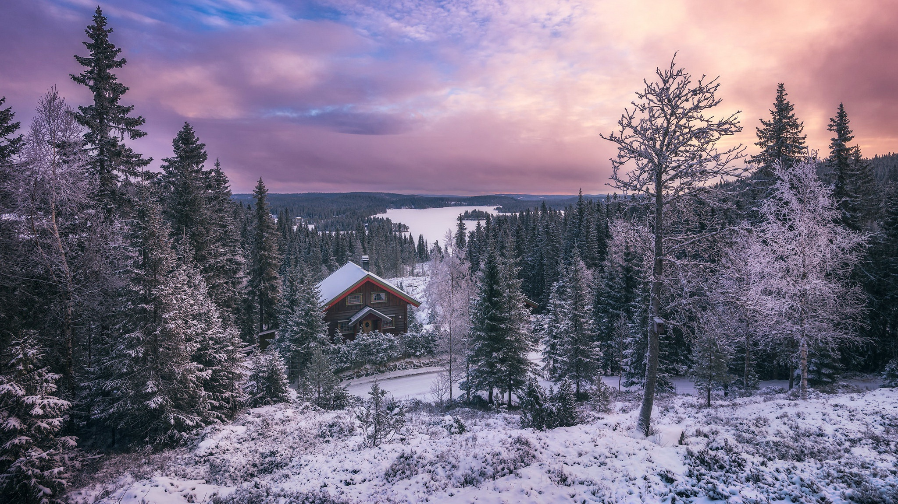

Родной мой снег, моя деревня,
Закрасил капли крови на кустах,
Отображаясь светом в мелочах,
Ты погружаешь мои мысли в негу,
А в доме печь трещит весь день,
Калачиком свернулся пёс у двери,
Мы с ним заткнули в доме щели,
Не испугает нас теперь метель,
На улице не виден даже лес,
Стеною перед ним встают ворота,
Снежинки кружат, будто вертолёты,
За их покровом целый мир исчез,
Следы всё глубже, по колено,
Белёсым цветом наложился гипс,
По форме валенок моих провис,
Образовались дыры в уплотненье,
В деревне мнётся первый снегопад,
Прохладно от его прикосновений,
Прозрачен, лёгок, будто привиденье,
Не видит сыплющий перед собой преград.
